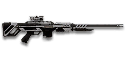

← Back to the NSX Daimyo comparison
Sage Guide · Nanite Systems · Infiltrator
A three-round semi-automatic sniper rifle with the biggest headshot multiplier in the game. One headshot kills to 188 m — and every shot after that still hurts.
Read this first — this gun is NOT a starter. The NSX Daimyo costs 1,000 certs (or 799 Daybreak Cash). It is a Nanite Systems weapon, so every faction's Infiltrator can buy it. Your starter sniper rifle is the bolt-action your faction hands you for free — the Daimyo is a purchase you make later, because you want the one-shot headshot, not a gun you start with.
The one-line verdict: a three-shot magazine that kills in one headshot out to 188 m. The 3.5× headshot multiplier is the whole gun — land the head and nothing else matters; miss it and you are working a 667 ms refire with three rounds and a long reload.

The NSX Daimyo · Nanite Systems · 3-round magazine · 1,000 certs
Every section below folds shut — tap a heading to open it. Section 01 starts open, because it's the lesson that saves you the most deaths.
Picture the scene, because you've probably lived it: you're sprinting across a courtyard, an enemy appears, and you do everything at once — clicking as fast as your finger allows while you're still running, then press aim-down-sights (ADS) a split-second later, finger still working. The sight picture snaps in, it looks precise… and your bullets spray everywhere except the man in your crosshair. He kills you. It feels like the game cheated. It didn't — here's what actually happened.
Four beats, left to right — the same mistake the cards above describe, drawn out.
1 · SprintingYour cone starts maxed at 7.0° — the widest it can ever be.
2 · Trigger heldFiring from the hip while running — every shot adds bloom.
3 · ADS, mid-holdThe sight looks precise — but aiming down sights does not reset bloom.
4 · The sprayBullets fly out of the wide cone you built. The enemy walks away.
Same fight, done right. Each beat has a job, and the order is the whole lesson.
1 · StopLet go of sprint (and the trigger). About 0.3 s for the gun to settle.
2 · AimPress ADS and let the sight come up (~0.15 s).
3 · FireNow fire — from the aimed cone. First shots land where the dot points.
The exception — under ~8 m, skip the whole danceHipfire works, no ADS needed, and stopping is optional. Keep moving, strafe, and let the hipfire ring do the work.
You started firing from a sprint, from the hip. Sprinting is the least accurate state in the game: your cone of fire starts at 6.0° — fully bloomed, the widest it can ever be. Every shot you fire from the hip widens it further still (+1.0° per shot).
Then you pressed ADS mid-hold — and nothing reset. Aiming down sights does not shrink a cone of fire that is already bloomed. The scope only gives you a precise picture; the bullets keep flying out of the wide cone you built while running and hipfiring. That's the whole mystery: accurate-looking aim, wildly inaccurate gun.
Two timers stack the deck further: your gun needs about 0.3 s to settle after a sprint, and raising the sight itself takes 0.3 s with a 7x scope (0.2 s with a 4x). Trigger working through all of it means your first half-second of fire is pure confetti — and on this gun, with only 3 rounds and 667 ms between shots, four wasted rounds are a quarter of your magazine gone for nothing.
1 · Feet. Let go of sprint (and the trigger, if you're already holding it). Stop, or drop into a strafe — anything but a full sprint.
2 · Sight. Press ADS and let the sight come up. This takes a heartbeat — that's fine. You have a cloak, not an overshield, to hide behind — and the cloak won't save a shot you already wasted. A clean first shot is worth more than a rushed spray.
3 · Trigger. Now fire. Starting from the aimed cone of 0°, your first shots land where the dot points, and you control the bloom from zero instead of inheriting a maxed-out cone.
Stop → aim → fire. If you take one habit from this entire page, take this one. You'll practise exactly this rhythm in the simulator in section 04.
Every enemy infantry has 1,000 health (500 shield + 500 health). Your bullet does 325 damage up close, fading to 250 at long range — NSX Daimyo damage. Headshots count ×3.5, leg shots count less (×0.9). Sniper rifles use a separate Sniper Rifles resistance type: body and leg shots are reduced against Nanoweave wearers (about 20% — implied by the wiki's effectiveness tables), so the chest count rises in the far bands. Headshots ignore it.
| Range | Damage | Head | Chest | Legs | Chest vs Nanoweave |
|---|---|---|---|---|---|
| Close · 0–10 m | 325 | 1 | 4 | 4 | 4 |
| Near · 10–67 m | 325→312 | 1 | 4 | 4 | 5 |
| Long · 67–188 m | 312→286 | 1 | 4 | 4 | 5 |
| Past the one-shot · 188–224 m | 286→278 | 2 | 4 | 4 | 5 |
| Far · 224–350 m | 278→250 | 2 | 4 | 5 | 5 |
Perfect-accuracy times: 1 headshot = 0 ms to 188 m; 2 headshots = 667 ms beyond it; 4 chest shots = 2,001 ms at any range. Against a shielded Heavy Assault (1,450 health with the shield up) it is 2 headshots to 188 m, or 5 chest shots up close and 6 at range. In real fights you will land maybe half your rounds — still, this is why the head matters so much on this gun: one clean headshot ends it, and no starter can do that.
Full power to 10 m, then a steady slide to minimum at 350 m. The headshot count is what matters — see the table above.
One gun, four fighting styles. The right technique changes with distance — use the range finder below to see what your bullets do at any range, then learn the four bands underneath it.
How to fight hereAim down sights at the neck. One headshot kills here — take the shot only when the crosshair is still, and let the 3.5× multiplier do the work.
Aim: centre of the chest, from the hip. Keep moving.
Scoping in costs you time and slows you down — at arm's length that gets you killed. But be honest with yourself: this gun's hipfire is loose (5.0° standing, 6.0° moving), so keep it truly close, strafe side to side (A/D) while firing, and let your 325-damage bullets do in four hits what a starter needs five for. Three rounds is one kill and a spare — make them count.
Aim: neck / upper head. One aimed shot, then reset.
This is where the gun earns its keep: near-full 325 damage, a 0.00° starting cone, and fast bullets (600 m/s). One headshot kills anything that isn't a shielded Heavy or a MAX. Start your crosshair at the neck — the first-shot kick (×2.66) climbs hard, so do not plan a second shot from the same aim point. Your home range as an Infiltrator: close enough to reach your squad, far enough that the enemy's hipfire can't touch you.
Aim: head, holding a little high. One aimed shot, then reset.
Damage is sliding toward 286 but the headshot still kills — 286 × 3.5 is just over 1,000. Hold your breath (Shift) to kill the scope sway, which grows with magnification, and remember the drop: about 0.4 m at 200 m. Take these shots at stationary or slow targets — medics reviving, engineers on turrets. Your bullets are fast (600 m/s) and your one-shot kill still holds.
Aim: head. Two aimed shots, with a real pause between them.
Past 188 m the headshot stops one-shotting (875 damage at 350 m), so every kill needs a second headshot — 667 ms later. That is still faster than any bolt-action's second shot (1.4 s or more), so you win the follow-up race if the first shot landed. But your magazine is three rounds: two heads and one spare, then a 2.2 s reload. Do not take this shot at a moving target unless you are sure of the first hit.
Your accuracy is decided by two things before skill even enters it: what your body is doing (your stance sets the starting cone of fire) and what your finger is doing (how you work the trigger). The NSX Daimyo is a semi-automatic sniper rifle, so "firing modes" are something you do with your finger and the bolt — not a setting on the gun. And with a 6x scope or higher, a third thing matters: scope sway — the crosshair drifts, more the higher you zoom. Hold Breath (Shift by default) almost completely suppresses it; the Target Focus implant extends how long you can hold it.
| Stance | Starting cone | What it means for you |
|---|---|---|
| Sprinting | 6.0° | Not the usual 7.0° — the Daimyo sprints a touch tighter than most rifles. Still far too wide to fire from: never start firing from a sprint. |
| Hipfire, moving | 6.0° | Walking or strafing from the hip. Fine inside ~8 m, leaks rounds past the target beyond it. |
| Hipfire, standing | 5.0° | Your point-blank default. The 0.70 m ring at 8 m in section 05 is this stance drawn out — workable, but every starter hipfires tighter than you do. |
| Hipfire, crouched | 4.5° | The tightest hipfire you have (5.0° if you crouch-walk). Crouch when holding a doorway from the hip. |
| Aimed (ADS), feet planted | 0.00° | Standing or crouched still makes no difference here — a perfect point, not a cone at all, until the first shot's bloom. Crouch-walking while aimed is 0.20°. This is why section 01's order matters. |
| Aimed (ADS), strafing | 0.55° | That is the moving floor — the cone you start from while strafing aimed, before bloom adds 1.0° per shot. You move at 0.5× speed while aiming, same as every sniper, so strafe between shots to break their aim, not during them. |
| Mode | How your finger does it | Use it at |
|---|---|---|
| One aimed shot — the default | Click once, release, let the cone reset, click again | Almost everything, 8–188 m. Each shot starts at 0.00° and the bloom (1.0° per shot) only matters if you fire again before resetting. One clean shot is the whole gun. |
| Two quick shots | Click twice, as fast as the 667 ms refire allows | Past 188 m, where the kill needs a second headshot — and only if the first one landed. The second shot leaves a 1.0° cone, so re-aim, don't just click. |
| Spam clicking — the mistake | Clicking as fast as your finger allows, shot after shot | Nowhere. Every shot adds a full degree of bloom and the first-shot kick (×2.66) throws your aim skyward. Three rounds of spray is an empty magazine and a dead Infiltrator. |
A target 30 m away, aiming down sights. Press and hold FIRE (mouse, touch, or hold Space with the button focused) and the practice window fires at the fastest pace this gun allows — one round per click in the real game, 667 ms apart — and watch the holes walk wider the longer you hold. Release, let the cone reset, fire again. One aimed shot is perfect discipline here. This practice window is shared by the whole Sage series: it is driven by a weapon profile plugged into the window — here the Daimyo's (90 RPM, 0.00° starting cone, 1.0° bloom per shot, target at 30 m) — and the spread is drawn at true scale from those numbers. Note the cone grows from the very first shot: there is no free window where the bullets stay perfectly grouped.
Cone of fire — fills as you hold, empties when you release.
Your shot strings will be graded here — one aimed shot is perfect discipline.
Some things are easier to show than to say. Here's what your bullets actually do: how wide hipfire spreads at 8 metres, what a good shot rhythm looks like, and what the scopes really change. The hands-on version — firing the shots yourself — is the practice window in section 04.
A full-size target 8 m away — an arm's-length room fight. The rings show where hipfire rounds land around your aim point (the chest). Sizes are drawn to scale from the gun's real cone-of-fire numbers.
Read it this way: standing still, the 0.70 m ring sits inside the chest — most rounds hit a target this size, which is why hipfire works point-blank. But move and it grows to 0.84 m — wider than the torso — so the edge rounds start leaking past him, and the rings only grow with distance while the man doesn't. Crouching tightens the ring to about 0.63 m (4.5°). Past ~10 m that's rounds missing entirely: the exact moment to switch to aiming down sights, where the spread shrinks to a dot. (Ring sizes use the real geometry: spread diameter = 2 × distance × tan(cone ÷ 2).)
Every shot widens your cone of fire ("bloom"). Releasing the trigger for a heartbeat resets it. Same 4 shots, two very different outcomes:
The target pattern is one aimed shot, a pause, and one more aimed shot — that is the ideal. Past that, the bloom (1.0° per shot aimed) keeps growing with every shot from the very first one, so the extra bullets mostly decorate the wall behind your enemy instead of hitting him. Short strings also leave you rounds for the second enemy — remember, the magazine is only 3, and a 4-shot spam is a third of it gone.
At 150 m through the 7x scope, the target is big enough to place a headshot — and you still see the ground around him. Fast to aim, nothing blocks your edges. Scope-in is 0.3 s; hold your breath (Shift) for the shot.
Same target, same 150 m — but through the 12x scope he looks nearly twice as tall again, so placing shots on his head gets much easier. The price: your view narrows to the round window, the world outside the glass is gone, and the sway looks twice as big. Best past 100 m.
That's the whole 30-cert decision from section 06 in one picture: 7x for the fight you are in, 12x for the shot you are planning. Most veterans carry both and swap per base — 7x for open ground, 12x for the long lane.
Attachments are small multipliers, not new guns. The only ones that really change how this gun behaves are the ones that affect scope-in time, sway and your aim. Prices are in certs where the wiki lists them; anything unpriced is marked "check in-game" — it hasn't been verified here.
A clean 4x magnification with a fast 0.2 s scope-in. Your close-range option.
Good: mid-range fights and base assaults, where the wider view keeps you aware of flanks.
Bad: the long lane past 150 m, where the target gets small and the head gets hard to place.
The standard sniper magnification. Scope-in is 0.3 s and the sway is noticeable — hold your breath (Shift) for the shot.
Good: almost everything a Daimyo does — 20–200 m, where the one-shot headshot lives.
Bad: tight indoor rooms — the zoom makes close targets feel fast and huge.
More magnification for the longest shots. The sway looks bigger with every step up, and the scope-in stays 0.3 s.
Good: the 150–250 m lane, picking off stationary targets.
Bad: any fight inside 100 m, where the 7x already covers you and the extra zoom only narrows your view.
Enemies glow against a dark view, and it sees through smoke.
Good: night fights and smoky doorways.
Bad: daytime and long range — its view is short-ranged and washes out in bright light.
Nothing wrong with an empty barrel slot on this gun — no attachment here changes your damage, and the one-shot headshot does not need help.
Good: your first weeks. Spend certs on your Infiltrator tools and suit first.
Bad: nothing — there is no downside to an empty slot.
You vanish from the minimap when firing and your shots are quiet. In exchange, damage starts dropping off sooner and bullets fly slower — your one-shot headshot range shrinks a little.
Good: flanking behind enemy lines, rooftop and tree work, solo play behind the front.
Bad: front-line fighting where everyone already knows where you are — you pay the range cost for stealth you don't need.
Hides your muzzle flash without the suppressor's damage and velocity cost. You still appear on the minimap when you fire.
Good: night fights and dark corners, where the flash gives you away before the minimap does.
Bad: daylight open-field work, where the flash was never the problem.
A torch whose beam reveals cloaked infiltrators. Toggle it with the attachment key (X by default).
Good: hunting a stalker infiltrator camping your capture point — sweep corners with it.
Bad: as your everyday rail — it gives zero accuracy help, and the beam advertises your position.
Reduces swap time by 30% and horizontal recoil by 20%, but increases vertical recoil by 20%. On a gun whose first shot already kicks ×2.66, the faster swap is the real prize.
Good: getting the rifle out fast after a cloak, and getting your sidearm out when the magazine runs dry.
Bad: if the extra vertical climb bothers you — the first-shot kick is already the hardest here.
One more round per magazine (3 → 4) — a whole extra shot before the reload, which on this gun is a whole extra kill.
Good: almost always — this gun's 3-round magazine is its sharpest weakness, and 4 rounds buys you a miss and still a kill.
Bad: nothing meaningful. It only costs certs.
Removes the weapon's ADS moving accuracy penalty, but you move 33% slower while aiming. Your aimed cone stays at 0.00° even while strafing.
Good: holding a lane while strafing — your shots stay pinpoint while you move.
Bad: aggressive play — the slower ADS strafe makes you an easier target if they spot you first.
Four ready-made setups — pick one, buy the attachments, go fight. Nothing here needs more than the gun and the listed attachments.
0 certs attachments · Just bought the gun
What the 1,000 certs actually buy you. Genuinely usable — learn the gun on this before spending anything more. The 4x scope is your first 30 certs.
230 certs attachments · Recommended
The best value in this whole guide. Covers every fight from a doorway to the long lane — with the Extended Magazine swapped in for the grip when you want a fourth round instead of a faster swap.
230 certs attachments · Long lane
The quiet long-lane build: big glass, no minimap signature, fast swaps. Hold the 100–188 m lane and let the targets come to you — one headshot each.
330 certs attachments · Mid-range hunter
Built for the 20–100 m fight: low magnification, pinpoint aim even while strafing, and a fourth round for the miss. Swap back to the All-Rounder outdoors.
The gun is fine — your habits decide the fights. Six things to do on every engagement, in order.
Headshots deal 3.5× damage: 1 kills to 188 m versus 4 to the chest. Don't aim at the head directly — aim at the neck and let the first-shot kick climb into the skull. It's the single biggest damage upgrade you own, and it's free. At 0 ms for one head, no starter out-kills you inside 188 m.
Every shot widens your cone of fire by 1.0° aimed, from the very first shot — the widest ADS bloom of any sniper rifle here. Firing again before it resets means the second bullet leaves a 1.0° cone. Click once, release, let it reset. With only 3 rounds, you can't afford to decorate the wall.
Reloading with even 1 bullet left takes 2.2 s; an empty gun takes 3.0 s. That extra 0.8 s is nearly a second standing defenceless. After one kill, duck behind cover and reload. Treat the last round as your emergency reserve, not your working magazine.
Walk with your crosshair at head height, pointed where an enemy's head will appear — a doorway edge, a corner, stairs. Most beginners lose fights in the half-second spent dragging the crosshair onto target. And you move at 0.5× while aiming, same as everyone else — so peek, fire your one shot, and break line of sight instead of standing in the open.
Your damage, accuracy and bullet speed all shine at 20–100 m, and your one-shot headshot holds to 188 m while theirs fades. Sprint between cover, use buildings and rocks as stepping stones, and arrive at your range before opening fire. The player who chooses the range usually wins the duel — make it you. Never chase a fight into arm's length if you can help it: that's where the 750 RPM guns live.
You're an Infiltrator, and the cloak is your escape — but a cloaked Infiltrator still has to reload. When the magazine runs dry, cloak first, then reload behind cover, then reappear somewhere else. The Daimyo's 2.2 s reload is an eternity in the open; behind a cloak it is free. Never reload in the open and never fight the second enemy with an empty gun.
Every gun has a price. Here's where the NSX Daimyo pays — and the habit that covers each hole.
Three rounds is one kill and a spare. A sprayed pair of shots can leave you dry mid-fight, and the Extended Magazine only adds one.
Play around it: burst discipline (habit 2) and early reloads (habit 3). Your 2.2 s short reload is fast — reloading often is the design, not a failure.
At 90 RPM there are 667 ms between your shots — the slowest follow-up of any semi-automatic sniper rifle here. Every miss costs you a full 667 ms of kill time, and two misses in a duel hand it to the enemy. Your damage per second is strong on paper, but only if the bullets land.
Play around it: aim first, then fire (section 01), and fire one aimed shot at a time. This gun forgives a bad position; it does not forgive bad aim.
1.0° of bloom per shot aimed, and the first shot kicks 2.66× as hard as the rest — about 2.1° of climb on shot one. In a fast pair your second shot is already climbing off the target's head.
Play around it: pull your mouse straight down while firing — the recoil angle is 0°, so there's no sideways correction to learn. And don't plan a second shot from the same aim point: re-aim every time.
5.0° standing and 6.0° moving from the hip — wide for a sniper rifle, and the bloom is 1.0° per shot. A hipfire duel under 10 m against a fast-firing rifle is a fight you're built to lose.
Play around it: keep your distance (habit 5), ADS even at 10 m, and if someone does close on you, backpedal while hipfiring rather than standing still — or cloak and reposition.
It takes 850 ms to equip, and an empty reload is 3.0 s against a 2.2 s short reload. Swapping to your pistol mid-fight, or running the magazine dry, leaves you defenceless for the better part of a second.
Play around it: reload early and only in cover (habit 3), and decide which tool is in your hands before the fight starts, not during it.
A thousand certs buys a lot of Infiltrator tool ranks, suit slots and abilities. The Extended Magazine buys one round. What you're buying is the one-shot headshot to 188 m — and only that.
Play around it: buy it for the headshot — the 0 ms one-shot kill inside 188 m — and only after your cloak and suit are in decent shape. If you mostly fight past 200 m, the free bolt-action is the better buy.
Five drills, all in the VR Training room — no certs, no enemies, no pressure. About 15 minutes a session; do one set, then go fight.
Aim at a wall 20 m away and empty a full magazine without touching the mouse. Watch the bullet pattern climb straight up — that's your gun's fingerprint: a 0° angle, no sideways drift at all, and a first shot that jumps hardest. Repeat, this time pulling straight down, until the group stays fist-sized.
Walk the dummy range keeping your crosshair glued to neck height the whole time, snapping to each new target without dipping to the floor or sky. Slow and clean first; speed comes on its own. One headshot is the whole gun — make the neck your default.
At 30–60 m, kill dummies with one headshot each, reloading after every third shot. If a dummy takes two shots, you missed the head — slow down. Goal: three dummies, three rounds, no reload mid-kill. Count your magazine while you do it — 3 rounds is one kill and a spare, so every wild round is a third of a kill thrown away.
Stand behind a pillar 15–25 m from a dummy. Step out, stop, ADS, fire one shot, step back behind cover. Repeat until stop → aim → fire is one motion instead of three decisions. This is the rhythm that keeps a 0.5×-speed Infiltrator alive: you never stand in the open trading shots.
Fire exactly 2 rounds, step behind a pillar, reload, repeat. Train your hands to reload early and only in cover until it's automatic — in real fights you'll do it without thinking, which is the point. Remember: a short reload is 2.2 s and an empty one is 3.0 s, so the last round is your emergency reserve, not your working magazine.